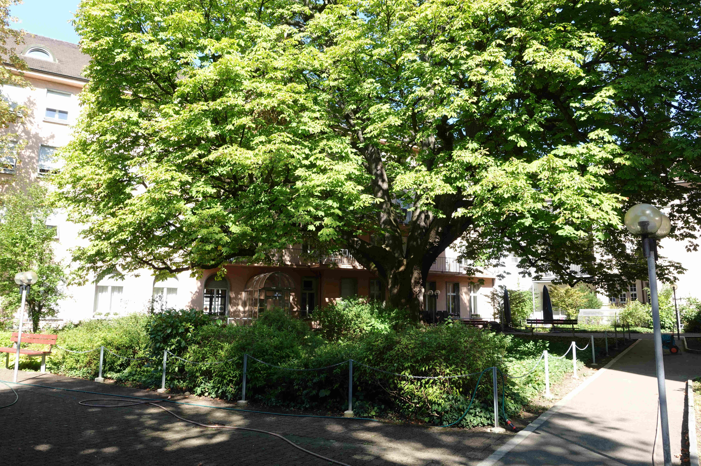
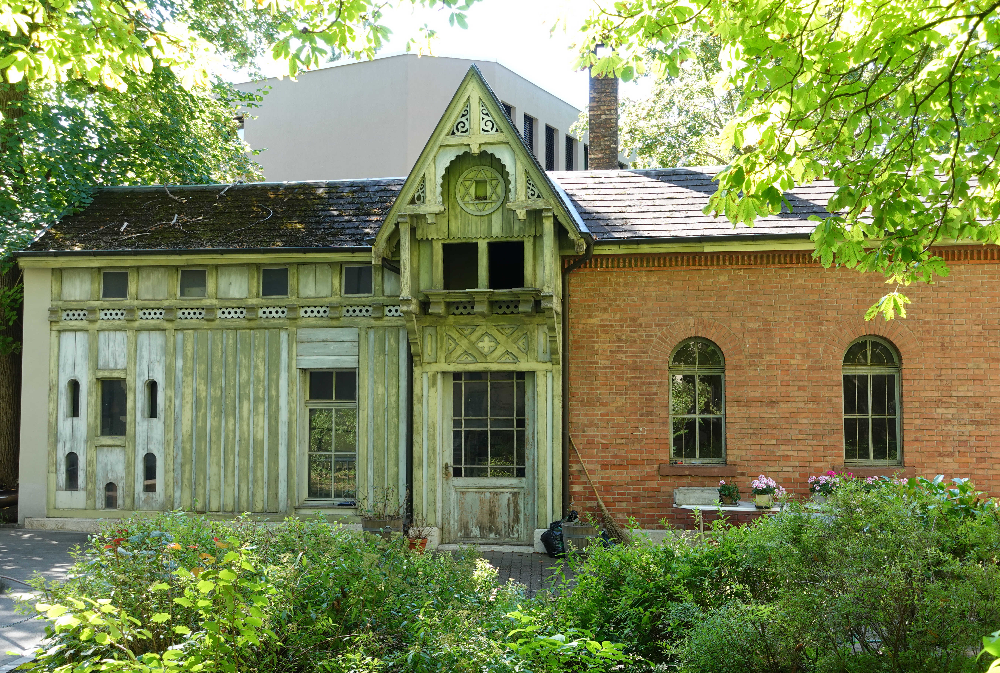

Mit ihrem Turm ist sie von weitem sichtbar, die Marienkirche, an der Holbeinstrasse 30 im Grossbasler Stadtteil ‹Am Ring›. Es ist der 1886 eingeweihte erste nach der Reformation in Basel errichtete römisch-katholische Kirchenbau. Wer neugierig das Gewölbe rechts von der Kirche durchschreitet, gelangt in einen weiten Hinterhof mit einem mächtigen Kastanienbaum im Zentrum. Etwas versteckt auf der Hinterseite fällt der Blick auf ein wunderschönes altes Gebäude, vielleicht ein jüdisches ‹Waschhaus›, doch führt der erste Eindruck nicht ganz auf die richtige Fährte.
Hinterhof der Marienkirche, Kastanienbaum und Pfarreiheim, 2023 (Bild: Cyrill Schmiedlin)
Der ursprüngliche Besitzer
Seit etwa 1870 suchte die rasch wachsende römisch-katholische Gemeinde Basels einen Bauplatz, um in Grossbasel eine Kirche zu errichten. Die Vorsteherschaft wurde fündig und konnte an der Gemeindeversammlung vom 16. Dezember 1883 über den Ankauf eines geeigneten Grundstücks abstimmen lassen. Anbieter des Areals war der Textilkaufmann Ferdinand Labhardt-Schubiger (1824–1892), ein aus Steckborn zugezogener Protestant. Ihm und seiner Gattin Elisabeth (1834–1927), einer Katholikin von Uznach, gehörte das um 1860 erbaute Wohn- und Geschäftshaus an der Holbeinstrasse 22. Die Gemeindeversammlung vom Dezember 1883 genehmigte nach längerer Diskussion den ihr vorgelegten Kaufvertrag. In den beiden folgenden Jahren wurde unter der Leitung des Zürcher Architekten Paul Reber (1835–1908) die Marienkirche erbaut.
Die Labhardtsche Liegenschaft
Die Entstehung des zauberhaften Häuschens fällt zeitlich mit dem
Baubeginn der Marienkirche zusammen. Ferdinand Labhardt verkaufte der
römisch-katholischen Gemeinde Basel 1883 als Bauplatz nur einen kleinen
Teil seiner Liegenschaft an der Ecke Holbeinstrase-Leonhardsstrasse. Das
der Familie Labhardt verbleibende Grundstück - mit dem ‹Waschhaus› am
westlichen Rand - gelangte erst 1929 als sogenannte Labhardtsche
Liegenschaft in den Besitz der römisch-katholischen Gemeinde. Diese
errichtete angrenzend an die Leonhardsstrasse einen Bau für soziale
Zwecke, das St. Hedwigsheim für Mädchen und alleinstehende Frauen, in
neuer Nutzung seit 1985 Pfarreiheim von St. Marien.
Heute erinnert nur noch das im Hinterhof der Marienkirche gelegene
sogenannte ‹Waschhaus› an die ehemalige Labhardtsche Liegenschaft. An
der Stelle des Ende 1883 von Ferdinand Labhardt in Auftrag gegebenen
kleinen Gebäudes stand Jahrzehnte zuvor eine Art Schopf oder
Ökonomiegebäude. Zum Gebäude, wie es sich gegenwärtig präsentiert, liegt
im Staatsarchiv Basel ein mehrteiliger Bauplan vor. Der Bauplan
bezeichnet es als ‹Hühner-, Holz- und Waschhaus›.
Ehemalige Verwendung des Gebäudes
Die Dokumente ergeben folgendes Bild: Auftraggeber war Ferdinand Labhardt-Schubiger. Die Pläne für die Baueingabe, unterschrieben vom Bauherrn Ferdinand Labhardt und dem verantwortlichen Architekten Paul Reber, tragen das Datum des 21. Januar 1884. Reber übernahm diesen kleinen Auftrag zeitgleich mit der Planung und dem Bau der Marienkirche. Das für den Eigenbedarf errichtete Gebäude umfasste im Erdgeschoss drei Teile: auf der Seite des heutigen Pfarreiheims das aus Backsteinen gemauerte Waschhaus, anschliessend einen mittleren Holzraum und gegen die Kirche hin einen Hühnerstall.
Das ‹Hühner-, Holz- und Waschhaus› im heutigen Zustand, 2023. Der mittlere Teil des Gebäudes, der Holzraum, darüber der Taubenschlag mit Davidstern. (Bild: Cyrill Schmiedlin)
Taubenschlag mit Davidstern
Über dem Holzraum in der Mitte befand sich ein Taubenschlag. Dort, wo
die Öffnung für die Tauben war, ist auf dem Bauplan eine Rosette
eingezeichnet. Statt der Rosette entschied man sich bei der Ausführung
des Baus für einen Davidstern.
Der heute zu sehende Davidstern ist - passend zur nahegelegenen Synagoge
- als ein jüdisches Symbol zu werten. Der Stern verweist auf Israel, das
Judentum, die Bibel. Bei der Öffnung des Taubenschlags angebracht, liegt
es nahe, an die biblische Erzählung von der überstandenen Sintflut zu
denken. 40 Tage lang hatte es geregnet, und als der Regen endlich
aufhörte, liess Noah dreimal eine Taube ausfliegen (Genesis 8, 8–13).
Beim ersten Mal kehrte die Taube mit leerem Schnabel zurück. Beim
zweiten Mal kehrte sie, nun eine Friedenstaube, mit einem Ölzweig
zurück. Als Noah die Taube nach sieben Tagen ein drittes Mal ausfliegen
liess, kehrte sie nicht mehr zurück. Ob das Ehepaar Labhardt-Schubiger
mit dem Symbol des Davidsterns auf die gemeinsamen christlichen Wurzeln
verweisen wollte? Den heutigen Besuchern des Gartens hinter der
Marienkirche ist der Davidstern in dieser Hinsicht jedenfalls ein
naheliegendes Zeichen.
Patrick Braun, Dr. phil., ist freischaffender Historiker und war 1977–2007 Redaktionsmitglied der Helvetia Sacra in Basel.
Weitere Artikel von {{ author.author }} finden Sie hier:
Zur Vertiefung:
- Dominik Heitz: «Im Hinterland versteckt», in: Basler Zeitung vom 27. Juli 2020.
- Schulz-Rehberg, Rose Marie: Architekten des Klassizismus und Historismus. Bauen in Basel, 1780–1880, Basel 2015, 189–191.